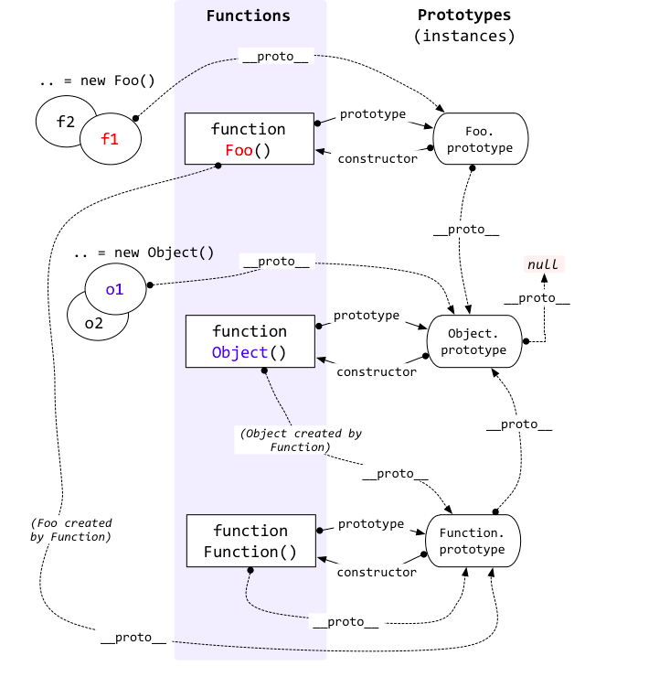

JS
- 前端事件流
捕获、处理、冒泡
ie是冒泡型，只有冒泡
addEventListener，最后布尔值是true，表示在捕获阶段调用事件处理程序，false表明在冒泡阶段调用事件处理程序
- 不支持冒泡事件的有
鼠标事件： mouseleave mouseenter
焦点事件： blur focus
UI事件： scroll resize
- addEventListener
通常我们使用addEventListener注册事件，该函数的第三个参数可以是布尔值，也可以是对象。对于布尔值useCapture参数来说，该参数默认值为false，useCapture决定了注册的事件是捕获事件还是冒泡事件。对于对象参数来说，可以使用以下几个属性
capture：布尔值，和useCapture作用一样once：布尔值，值为true表示该回调只会调用一次，调用后会移除监听passive：布尔值，表示永远不会调用preventDefault
-
事件委托（提高性能）
在其父元素上设置监听函数，通过事件冒泡，父元素可以监听到子元素上事件的触发，通过判断事件发生元素DOM的类型来做出不同的响应 -
js的new操作符做了什么
new操作符创建了一个空对象，这个对象原型指向构造函数的prototype，执行构造函数后返回这个对象。1
2
3
4
5
6
7
8
9
10
11function create(fn,...args){
//创建空对象
var obj = new Object()
//设置原型链
obj._proto_ = fn.prototype
//Object.setPrototypeOf(obj, fn.prototype)
//让fn的this指向obj，并执行fn的函数体
var result = fn.call(obj)
//判断返回值是否为对象
reutrn result instanceof Object ? result : obj
} -
this指向
this指的是函数运行时所在的环境
this总是指向调用该函数的对象- 当函数作为对象的方法被调用时，this会指向该对象
- 作为普通函数，this指向window
- 构造器调用，this指向返回的这个对象
- 箭头函数的this绑定看的是this所在函数定义在哪个对象下就绑定哪个对象
箭头函数的this相当于普通变量，在作用域中逐级寻找
- 怎么改变this指向
1.使用es6箭头函数 2.函数内部使用that=this 3.使用apply、call、bind 4.new实例化一个对象
- bind、apply、call 区别
apply、call第一个参数是一样的表示要改变指向的那个对象，第二个参数，apply是数组，call是参数列表形式
bind返回一个函数， 并不会立即执行
- 深浅拷贝
浅拷贝： 一层拷贝，slice() concat() Object.assign
只会拷贝所有的属性值到新的对象中，如果属性值是对象的话，拷贝的是地址
深拷贝： 无限层级拷贝
- JSON.parse() 和JSON.stringify()
JSON.stringify()把一个js对象序列化为一个json字符串，JSON.parse()将一个json字符串反序列化为一个json对象1
copyObj = JSON.parse(JSON.stringify(obj))
缺点：
- 无法实现对函数、RegExp等特殊对象的克隆
- 会抛弃对象的constructor，所有构造函数会指向Object
- 对象有引用循环，会报错
- 手动
1
2
3
4
5
6
7
8
9
10
11
12
13
14
15function deepCopy(obj){
if(!obj && typeof(obj) !== 'object'){
throw new Error('error arguments')
}
const targetObj = Array.isArray(obj) ? [] : {}
for(let key in obj){
if(obj[key] && typeof obj[key] === 'object'){
targetObj[key] = deepCopy(obj[key])
}else{
targetObj[key] = obj[key]
}
}
return targetObj
}
也会出现以上问题
由于要对不同的对象（正则、数组、Date等）要采用不同的处理方式，所以要有一个判断对象类型的函数
-
setTimeout和setInterval机制
会把相应的回调函数在event table中注册，一定时间过后，比如说1000，就是1s过后把这个函数移到event queue中，主线程执行完后会从事件队列中读取任务执行 -
eventloop
- 主线程从上到下执行所有代码
- 同步任务直接被执行，异步任务进入Event Table注册相应的回调函数
- 全局script执行完毕后，从微任务队列中取任务执行，如果执行过程中又产生微任务就加入队尾，也会在这个阶段被执行
- 微任务队列所有任务执行完后取宏任务队列中的任务执行
- 宏任务一次只从队列中取一个任务执行执行完就去执行微任务队列
- 重复
- 前端跨域问题
同源策略的限制，协议域名端口有一个不同都不行
解决：
1.jsonp（只能get），原理是动态生成一个script标签，利用script标签的src属性不受同源策略的限制，可以请求第三方服务器资源
2.cors，服务器设置Access-Control-Allow-Origin HTTP响应头之后，浏览器将会允许跨域请求
3.proxy
http-proxy-middleware 用于把请求代理转发到其他服务器
- 图片预加载和懒加载
- 预加载是为了用户体验良好，减少等待时间，如果有一个页面内容过于庞大，会出现留白
实现方法： 1. 使用html标签，
2.使用image对象
- 懒加载：减少请求数，提升用户体验，减少无效资源的加载，防止并发加载的资源过多会阻塞js的加载
原理是将页面上的图片的src属性设置为空字符串，而图片的真实路径则是设置在一个自定义的属性，当页面滚动的时候去监听scroll事件，如果图片进入了可视区域就把图片的src值设置为自定义属性里的真实路径值
-
函数节流和防抖
防抖是在短时间内多次触发用一个事件，只会执行最后一次
节流是连续触发事件的过程中以一定时间间隔执行函数（释放大招有cd） -
js垃圾回收机制
- 引用计数
就是看有没有别的对象引用了你，如果没有那就是零引用，对象将被垃圾回收机制回收 - 标记清除
当一个变量进入环境时 会被标记成“进入环境”，离开环境时被标记成“离开环境”，垃圾回收器在运行的过程中会把在环境中的变量以及在环境中的变量引用的变量的标记清除掉，那么有标记的就是垃圾，会被回收
- 一些检验方法
- typeof 能够检测基本类型，但是引用类型都会是object
- instanceof 原理是检测原型，就是比如说var a = new B() 那么a的proto属性会等于构造函数B的prototype属性，然后返回true
存在的问题：它假定只有一个全局环境，如果网页中包含多个框架，那么实际上就存在两个以上不同的全局执行环境，而存在两个以上不同版本的Array构造函数。注：es5提供了Array.isArray()方法 - constructor
- Object.prototype.toString 返回对象内部属性的
[[class]]，其格式为[object xxx]这个xxx就是对象的类型
- splice和splice、map和forEach、filter()、reduce()
- slice(start,end) 返回一个新数组，包含从start到end
- splice(index,howmany,item1,item2…) 从数组中添加或删除项目 (item可选)
- map() 返回一个全新的数组
- forEach 不会返回，只是让数据做一些事情
- reduce 让数组前一项和后一项做某种计算并累计最终值
- filter 过滤，筛选出数组中符合条件的项组成新数组
-
js/css阻塞
js阻塞：所有浏览器在下载js时会阻止一切其他活动
css阻塞： 会阻塞dom树的渲染和js的加载、 -
类的创建和继承
继承：
构造函数
在子类型构造函数中调用父类型构造函数，无法继承父类原型链上的属性和方法1
2
3function SubType(){
SuperType.call(this)
}原型链
让一个引用类型继承另一个引用类型的属性和方法，属性和方法都是共享的。多个实例对引用类型的操作会被篡改1
SubType.prototype = new SuperType()
组合
使用原型链实现对原型属性和方法的继承，通过构造函数来实现对实例属性的继承
给两个构造函数A和B，如何实现A继承B
A.prototype = Object.create(B.prototype)
再A的构造函数里new B(props)
- es6的class、extends
ES5的继承实质上是先创建子类的实例对象，然后将父类的方法添加到this上
ES6的继承实质上是先创建父类的实例对象this，再用子类的构造函数修改this。所以要先调用父类的super函数再使用this
- super
- 作为函数调用： 代表父类的构造函数
- 作为对象使用： 在普通方法里指向父类的原型对象
- 作为对象使用： 在静态方法中指向父类
- 闭包和原型
- 闭包本质是将函数内部和外部连接起来，优点是可以读取函数内部的变量，让这些变量的值始终保存在内存中，不会在函数被调用后自动清除
- 缺陷：增大内存使用量，使用不当会造成内存泄漏
如果不是因为某些特殊任务而需要闭包，在没必要的情况下，在其他函数里创建函数是不明智的，因为闭包对脚本性能具有负面影响，包括处理速度和内存消耗 - 内存的理解
内存溢出：在程序中申请内存时，没有足够的内存空间供使用，出现out of memory
内存泄漏： 程序申请内存后，无法释放已申请的内存空间 - 作用域
由当前环境与上层环境的一系列变量组成，保证当前执行环境里，有权访问的变量和函数是有序的，作用域链变量只能被向上访问 - 作用域链
当代码在一个环境中执行时，会创建变量对象的一个作用域链，作用域链保证执行环境有权访问的所有变量和函数的有序访问 - 原型链
让原型对象指向另一个类型的实例，另一个类型也有自己的原型

-
script标签的async、defer
defer：用于开启新的线程下载脚本文件，并使脚本在文档解析完成后执行。多个脚本会按顺序下载和执行
async：HTML5新属性，用于异步下载脚本文件，下载完毕执行代码。如果多个脚本之间有依赖关系不推荐用async，因为不能保证执行的先后顺序 -
FileReader
文件读取和图片预览
4个方法：
- readAsBinaryString：将文件读取为二进制编码
- readAsText：将文件读取为文本
- readAsDataURL：将文件读取为DataURL，将图片文件转换为base64编码
- abort：中断读取操作
用户上传文件后会生成一个FileList对象
-
js基本类型
string, number, boolean, undefined, null, symbol
引用类型object -
null和undefined区别
- null表示“没有对象”，即该处不应该有值
典型用法：
- 作为函数的参数，表示该函数的参数不是对象
- 作为对象原型链的终点
- undefined表示“缺少值”，即此处应该有一个值但还没有定义
典型用法：
- 变量被声明了但没有赋值
- 调用函数时应提供的参数没提供
- 对象没有赋值的属性
- 函数没有返回值默认返回undefined
- requestAnimationFrame
为了实现流畅的动画效果，特点：
- 将每一帧的dom操作集中起来，在一次重绘或回流中完成，重绘或回流的时间间隔紧紧跟随浏览器的刷新频率
- 在隐藏或不可见的元素中不会进行重绘或回流
- 运行时浏览器会自动优化方法的调用，页面不是激活状态下动画自动暂停
-
数组常用方法
push、pop、shift、unshift、splice、sort、reverse、map -
数组去重
- indexOf
1
2
3
4
5
6
7
8
9function unique(arr){
let newArr = []
for(let i = 0; i < arr.length; i++){
if(newArr.indexOf(arr[i])===-1){
newArr.push(arr[i])
}
}
return newArr
}
1 | //利用indexOf检测元素在数组中第一次出现的位置是否与元素现在的位置相等 |
set解构赋值去重
1
[…new Set(arr)]
set和Array.from去重
1
Array.from(new Set(arr))
- js语言特性
- 解释型脚本语言，在程序运行过程中逐行解释
- 基于对象
- 弱类型语言，较为灵活，对使用的数据类型未作出严格要求
- 跨平台性，不依赖于操作系统，仅需浏览器的支持
- SEO搜索引擎优化
- TDK优化
- title 主题明确
- description
应用了meta description使摘要具有可读性<meta name=“description” content=“介绍了。。。”> - keywords 设置关键字
- 页面内容优化
- html5语义化标签
header, footer, section, aside, article,nav
重要的用strong强调 - 每个页面都有唯一的h1标签
- img设置alt，若宽高固定就设置固定值
- 不需要跟踪爬行的链接设置nofollow
- url优化
- 统一链接
www.google.com和google.com - 301跳转（永久移动）
- canonical表示页面的唯一性，用于参数传递的情况
robots
搜索引擎蜘蛛访问网站时第一个访问robots.txt（在站点根目录）补充其他
- 重要内容不要用js输出，因为爬虫不会执行js获取内容
- 重要内容html代码放在最前，搜索引擎抓取html顺序从上到下，有的会有抓取长度限制
- 提高网站速度
- 前端性能优化
- 页面
- 通过文件合并、css雪碧图、base64等方法减少http请求数
- 通过DNS缓存等机制来减少DNS的查询次数
- 通过设置缓存策略，对常用不变的资源进行缓存
- 使用延迟加载的方式来减少页面首屏加载时需要请求的资源
- 通过用户行为对某些资源使用预加载的方式，提高用户需要访问资源时的响应速度
- 服务器
- 使用CDN服务
- 服务端开启gzip等方式对资源进行压缩
- 尽可能减少cookie的大小，有些不需要携带cookie请求到的资源可以分配到其他域名下
- css和js方面
- 样式表放在页面的head标签中，减少页面首次渲染时间
- 避免使用@import标签
- 尽量把js脚本放在页面底部或者使用defer或async属性，避免脚本的加载和执行阻塞页面的渲染
- 通过对js和css文件进行压缩来减少文件的体积
- 小程序和H5有什么区别
- 渲染方式与H5不同，小程序一般通过Native原生渲染的，H5用web渲染
- 小程序特有的双线程设计。H5下所有资源打包在一个bundle.js文件里，而小程序编译后的结果会有两个bundle，index.js封装的是小程序的view层，以及index.woek.js封装的是项目的业务逻辑，在运行时，会有两条线程来分别处理这两个bundle，一个是主渲染线程，一个是service worker线程负责执行业务逻辑
#前端面试